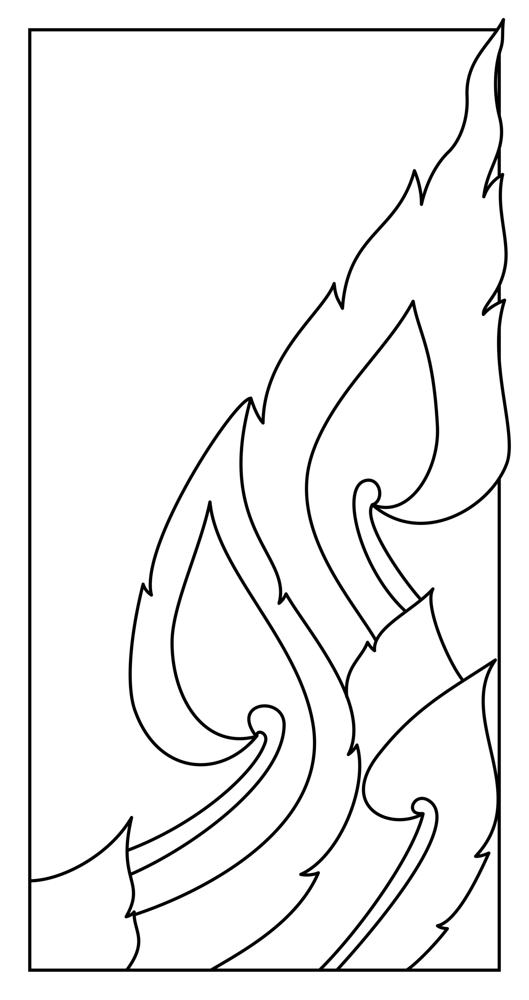
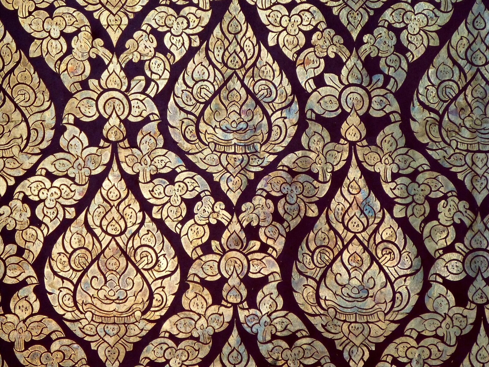
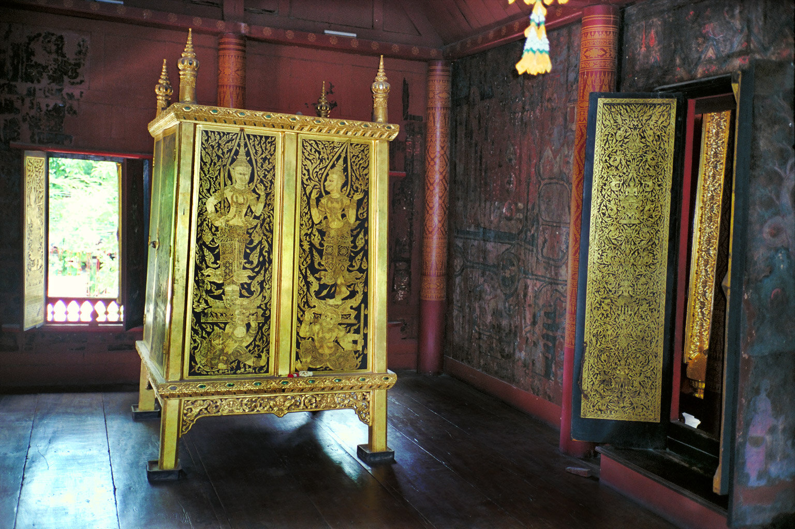
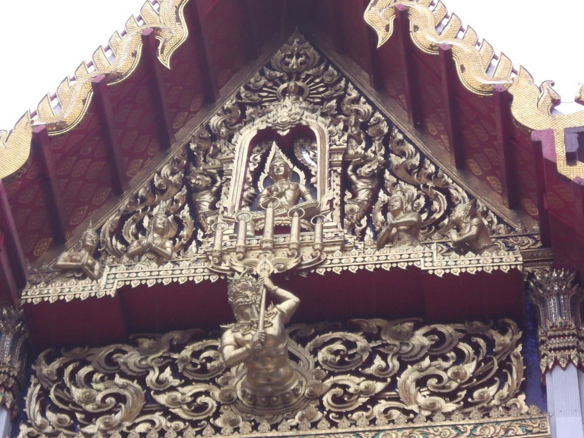
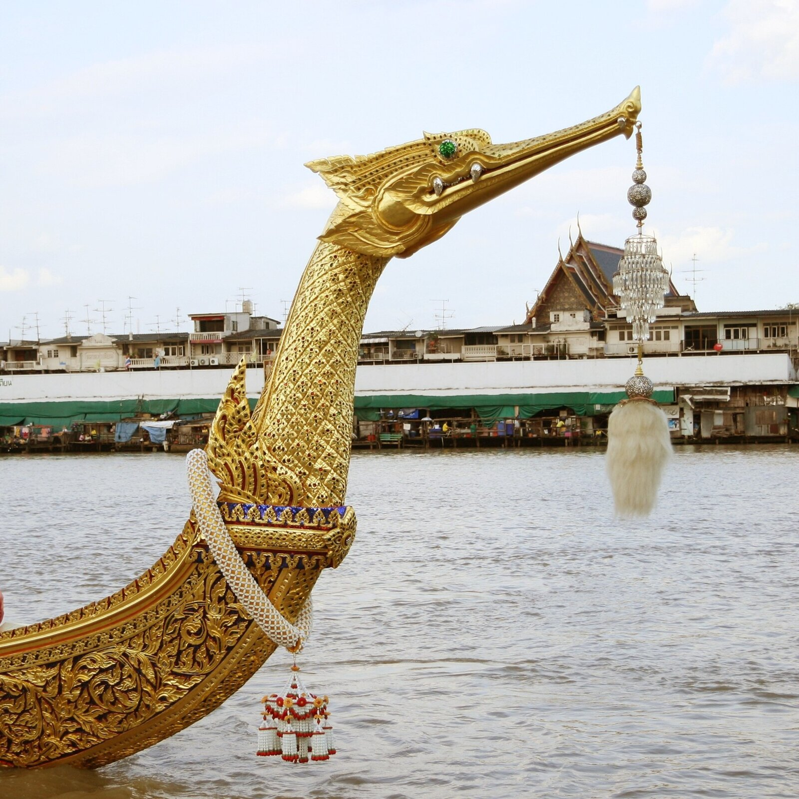
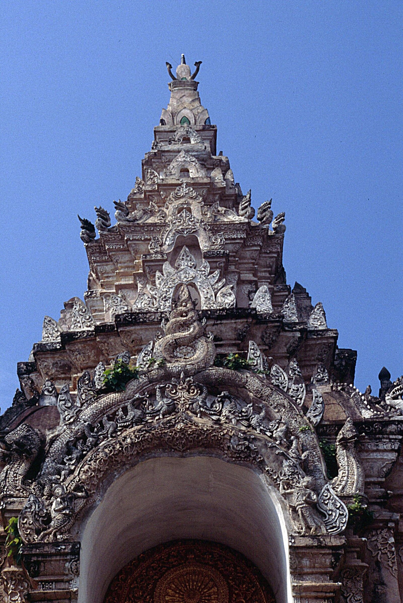
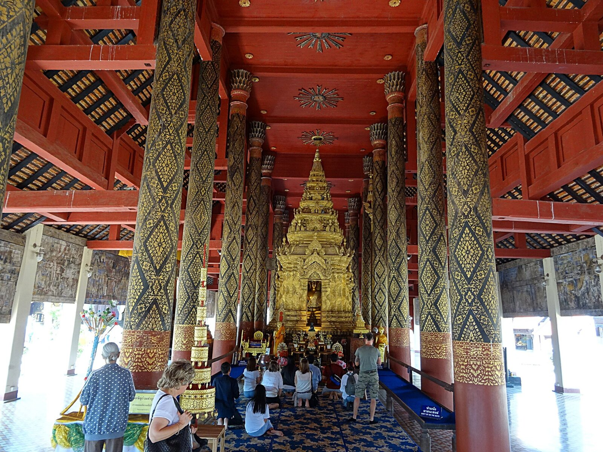
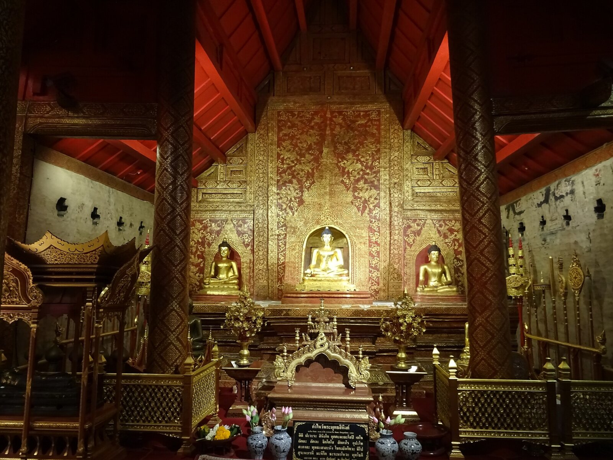
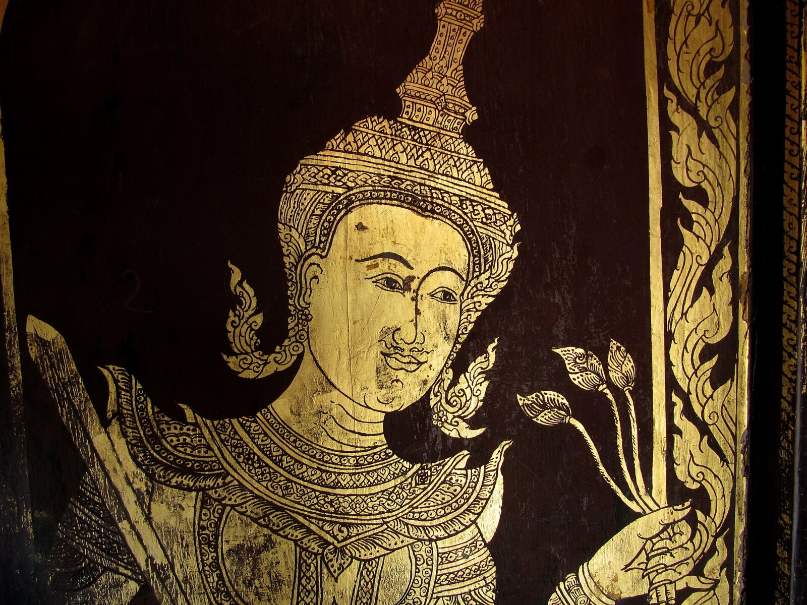

Thai ornament, drawn with math
Kranok, Drawn
Kranok is the flame at the root of Thai ornament: gold on the black lacquer of temple doors and scripture cabinets, carved into gables, worn on khon masks. Every flame on this page is drawn from one equation. Move your pointer near them and they lean away.
The flame of Thai ornament, drawn with math
motdang.net/sites/kranok
กระหนก · kranok
A word for gold, a pattern of flames
The Royal Institute dictionary spells the pattern กระหนก, kranok: a kind of Thai ornament that is painted, gilded on lacquer, modelled or carved, in many kinds, such as flame kranok and coiled-stem kranok. It may also be written กนก. On its own, กนก (ka-nok) means gold, from Pali and Sanskrit kanaka. Thai Wikipedia reports Prince Naris's suggestion that the word first named gilt cabinets and passed to the pattern on them.
Thai drawing has four categories: kranok, ornament; nari, human and divine figures; krabi, the monkeys and giants of the Ramakien; and kacha, animals real and from the Himmapan forest. Masters' books give five basic mother patterns (mae lai), the units repeated to build a design: krachang, phum khao bin, prachamyam, dao and kranok.
Where the shape came from is argued. Thai Wikipedia traces it to the hang lai, the eel-tail figure, which comes from the look of a flame; one teacher adds snake tails. Art historian Santi Leksukhum is cited for an origin in Indian ornament of the Gupta period, and for the lotus as the source of the three-figure kranok. Thai sources list fern tips, vines, bamboo sheaths, cotton leaves and flames among the models for Thai pattern.
The three-figure kranok, kranok sam tua, is the mother of all kranok, and where training starts: instructors at the Royal Craftsmanship School begin with it. The Office of Traditional Arts in the Fine Arts Department keeps the chang sip mu, the ten crafts: painting, carving, engraving, turning, casting, modelling, figure-making, lacquer, beaten metal and stucco.
ตัวเหงา · the curl
A spiral that keeps its shape
At the foot of a kranok the line winds into a curl. A logarithmic spiral fits it: a spiral that grows by the same factor every turn, so a small curl and a large one have the same shape, and the line crosses every ray from the centre at the same angle.
The other common spiral, the Archimedean, adds the same gap every turn, like a rolled mat. Switch between them and watch the gaps between the turns.
The logarithmic spiral is r = ebθ: r is the distance from the centre, θ the angle turned, b the growth. Each turn multiplies r by e2πb. Teachers say to coil the head like a snail shell. No published measurement says which spiral a drawn curl follows; the logarithmic spiral is this page's model.
One graph
One graph draws the whole flame
A curve can be described by one thing: how sharply it bends at each point along its length. The graph is the bending of the gold flame beside it, from the eye of the curl to the tip. Change the graph and the flame follows.
Near the eye the bending is very large and falls off as one over the distance, κ = a / s: that part is the logarithmic spiral. In the middle the bending is nearly flat, and the body of the flame runs almost straight. Near the tip it dips below zero, the line bends the other way, and the tip flicks.
Mathematicians call this the natural equation of a curve: bending as a function of length, with nothing about where the curve sits on the page. Add up the bending and you get the direction; add up the direction and you get the line. The notches (bak) on the back are laid on top: a sawtooth that rises slowly and drops sharply, each point pushed forward toward the tip.
กนกสามตัว · kranok sam tua
The three-figure kranok
Three figures make the mother pattern: ตัวเหงา (tua ngao), the curl, lowest and in front; ตัวประกบ (tua prakop) or กาบ (kap), the sheath behind it; and ตัวยอด (tua yot), the tip. The Royal Institute dictionary gives เหงา as the name of the first kranok figure. Ngao also means lonely, and school lessons pun on its drooping curl.
One recipe: an upright rectangle, 4 by 2, and its diagonal; the sheath in the bottom-left corner; a curve from the root into the head and up to the tip in the top-right corner; back down like a flame; split into three, notch them, add the inner lines. Another teacher uses a right triangle 3 tall and 2 wide, and lets the head bulge a little outside it, so the kranok looks alive.
Each figure here is one flame from the bending graph above, with a round belly around its curl. The teaching drawing is the first picture under Pictures.
Flames on flames
Kranok inside kranok
Each notch on a kranok's back ends in a small flame. Let every one grow a whole kranok of its own, and every notch on those, and so on. Architects speak of nested kranok, and a 2014 Burapha University report set out to model the kranok's fractal form; this recursion is the page's own.
With three notches and each child r times the size of its parent, level n has 3n flames, each with r2n of the first flame's area. The gold adds up to a geometric series, 1 + 3r² + (3r²)² + …, which settles at 1 / (1 − 3r²) times the first flame while 3r² < 1. Past r ≈ 0.58 it grows without end.
The counts are exact. Overlaps are counted twice, so the gold figure is an upper bound.
ลายก้านขด · lai kan khot
The scroll stem
The Royal Institute dictionary calls lai kan khot a pattern drawn coiling this way and that. A stem waves along the band; from each slope a branch peels off and bends harder and harder until it winds into a curl in the next hollow. Flames grow on the outside of each curl.
The branch is the flame's curl run from the other end: the same bending, κ = a / (L − s), counted back from the end of the branch, so it tightens as it goes. Turn on Lines only to see the bones.
The wave is a cosine; the branches start at its steepest points and turn left after a crest, right after a trough.
ลายหน้ากระดาน · lai na kradan
Seven ways to repeat along a band
Lai na kradan is the running band on the flat face between lotus mouldings, a motif repeated along a strip. However it is drawn, a band that repeats uses one of exactly seven combinations of slides, flips and half-turns. Mathematicians call them the seven frieze groups; the names on the buttons are John Conway's nicknames.
A 2023 survey of seven Khmer-style stone temples in southern Isan found four of the seven there: p2mm, p1, p1m1 and p11m. No one has yet published a count for central Thai bands.
Around a point
Turn the flame around a centre n times and you get rotation symmetry, Cn. Add mirrors and you get Dn, with twice as many moves that leave the picture unchanged. Any rosette has one of these two kinds, for some n.
Prachamyam, the four-petal flower set between other patterns, is symmetric about both axes: D4.
Draw
Draw one
Draw a line with your finger or mouse. When you lift, the line winds into a curl at its end, with the same bending as the scroll, and grows flames on alternate sides. Draw as many as you like and save the picture.
Where it lives
Gold on black
Lai rot nam, water-washed pattern, is gold leaf laid on black lacquer and washed with water at the end, so the gold stays only where the design is. It covers doors, windows, walls and the cabinets that hold palm-leaf scriptures. Kranok also fills carved gables, khon masks and crowns, Bencharong porcelain, mother-of-pearl, and gilt stucco set with glass.
For a gable, a door or a cabinet, the craftsman draws one half, traces it, flips the tracing and registers it on the centre line: mirror symmetry by hand.
Artist กชวัช บูรณภิญโญ's exhibition ทำ-ลาย swapped kranok figures for bendy cartoon dogs, cats, ducks and birds. No frogs or toads: their round bodies cannot follow the mother pattern.



.jpg){kind=link}














In the north
In Lanna the gold is called kham. Lai kham is usually laid on red cinnabar, and at Wat Phra That Lampang Luang also on black lacquer. The gold goes on through a cut stencil, or is scratched, or both; the stencils carry kranok, flowers, geometric figures and praying deities. Wat Phra Singh in Chiang Mai has the Wihan Lai Kham, the hall of gilt pattern.
Early Lanna stucco, as at Wat Pa Sak in Chiang Saen, is thick and layered, drawing on Hariphunchai, Bagan, Sukhothai, Khmer and Sri Lankan work. Ayutthaya pulpit makers later borrowed Lanna ornament, ngao curls at the corners among it.
Words
The flame-shaped pattern. กนก alone means gold.
The curl: the first and lowest figure of a kranok.
The sheath behind the curl.
The tip, the flame that rises to the top.
A notch cut into the back of a figure; บากเข้า curves in, บากออก curves out.
The inner line, drawn lighter than the outline.
Mother pattern: the unit repeated in a row.
The eel-tail figure, a flame-like stroke under the flame kranok.
Flame kranok, about six or seven notches a figure.
Kranok with a sheath, in and out notches, and inner lines.
The coiled-stem scroll.
A triangular leaf pattern set in rows along edges.
A four-petal flower set at intervals between other patterns.
The running band between lotus mouldings.
Gold leaf on black lacquer, washed with water.
Lanna gilt pattern, often on red.
The ten crafts; also the Office of Traditional Arts.
Sources
Facts come from these; the drawing method, the spiral fit and the recursion are this page's own. Thai researchers have built kranok from Bézier curves (Silpakorn 2008, Burapha 2014) and modelled each notch as two S-curves (KMUTT 2023).
- Royal Institute dictionary (ORST): กระหนก, กนก, เหงา, ก้านขด, กระจัง, ประจำยาม, ลายรดน้ำ
- Thai Wikipedia: ลายกระหนก
- English Wikipedia: Kranok pattern
- Narit Vadhanabhu (2022), Fine & Applied Arts Journal, Thammasat 15(2)
- Thairath (8 Oct 2020): instructors of the Royal Craftsmanship School
- JitdraThanee: Thai pattern lessons 1–9
- Jiravansirikul & Areerungruang (2023), Silpakorn
- Boonserm et al., Journal of Fine and Applied Arts, Thammasat
- Thamwiset (2023), Analysis of Traditional Thai Pattern, KMUTT
- Leelatrakul, Rimcharoen & Wachirahatpong (2014), Evolutionary Algorithm for Modelling Kranok Pattern, Burapha University
- Toadithep & Itisarn (2008), Curve Fitting and Animated Drawing Thai Painting, ATCM
- Hobanthad et al. (2023), frieze and rosette groups at stone temples, Buriram Rajabhat
- Neti Phikroh (2024), lai kham, Journal of Buddhist Arts 7(1)
- Kajondet Niwyin (2022), lai kham at Wat Phra Singh and Lampang Luang, Journal of Thammawat 3(2)
- Teerapong Jatuma (2025), Lanna stucco, Journal of Buddhist Arts 8(2)
- Patison Benyasuta (2022), Ayutthaya pulpits, Damrong Journal
- Thai Wikipedia: ช่างสิบหมู่
- Thai Wikipedia: ลายรดน้ำ
- Wikimedia Commons: every photograph, with its licence